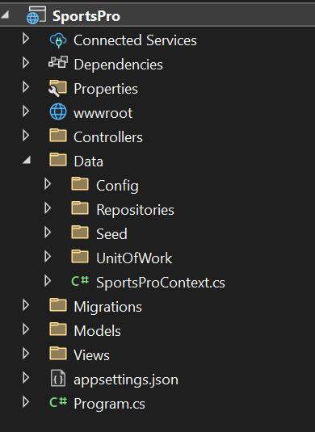
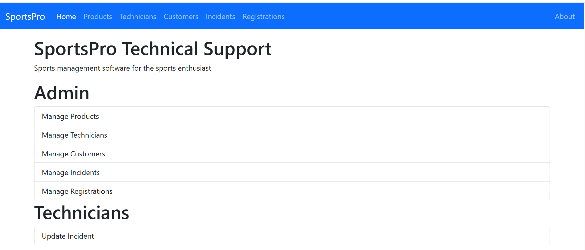
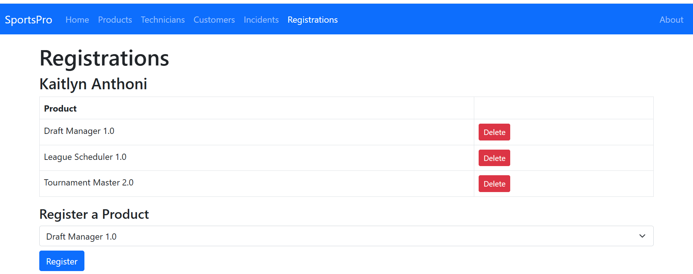
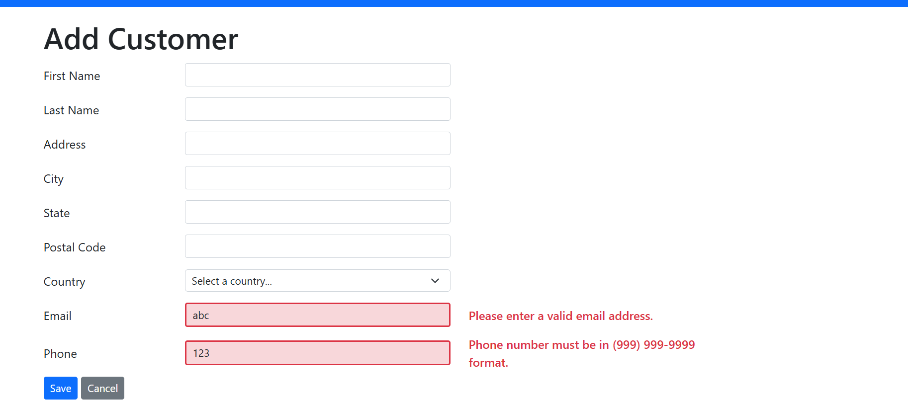

Project Overview
The SportsPro Technical Support System is a web‑based ASP.NET Core MVC application designed to manage customers, products, technicians, incidents, and product registrations. The system is used by administrators to maintain data and support technicians in resolving customer incidents.
Features
- Entity Framework Core
- Repository Pattern
- Unit of Work Pattern
- Many‑to‑many relationships
- Data seeding
- MVC controllers and views
- Session state
- LINQ queries with multiple WHERE clauses
- Navigation properties and Includes
Screen Captures
Below are sample screenshots of the C# application.




Sample Code
// Sample C# classes (replace with your real code)
public class SportsProContext : DbContext
{
public SportsProContext(DbContextOptions options)
: base(options) { }
public DbSet Products { get; set; }
public DbSet Customers { get; set; }
public DbSet Incidents { get; set; }
public DbSet Registrations { get; set; }
protected override void OnModelCreating(ModelBuilder modelBuilder)
{
modelBuilder.ApplyConfiguration(new RegistrationConfig());
ProductSeed.Seed(modelBuilder);
CustomerSeed.Seed(modelBuilder);
}
}
public class RegistrationConfig : IEntityTypeConfiguration
{
public void Configure(EntityTypeBuilder entity)
{
entity.HasKey(r => new { r.CustomerID, r.ProductID });
entity.HasOne(r => r.Customer).WithMany().HasForeignKey(r => r.CustomerID);
entity.HasOne(r => r.Product).WithMany().HasForeignKey(r => r.ProductID);
}
}